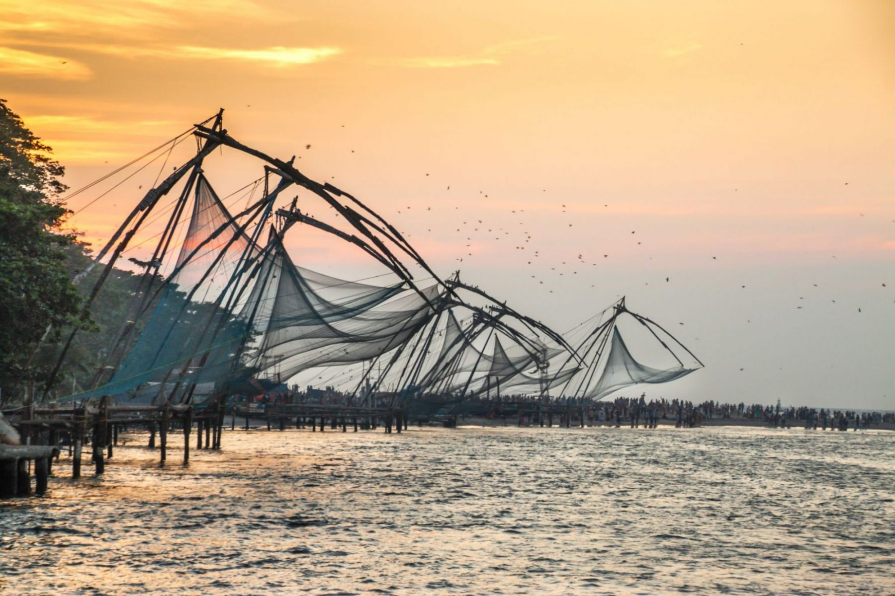
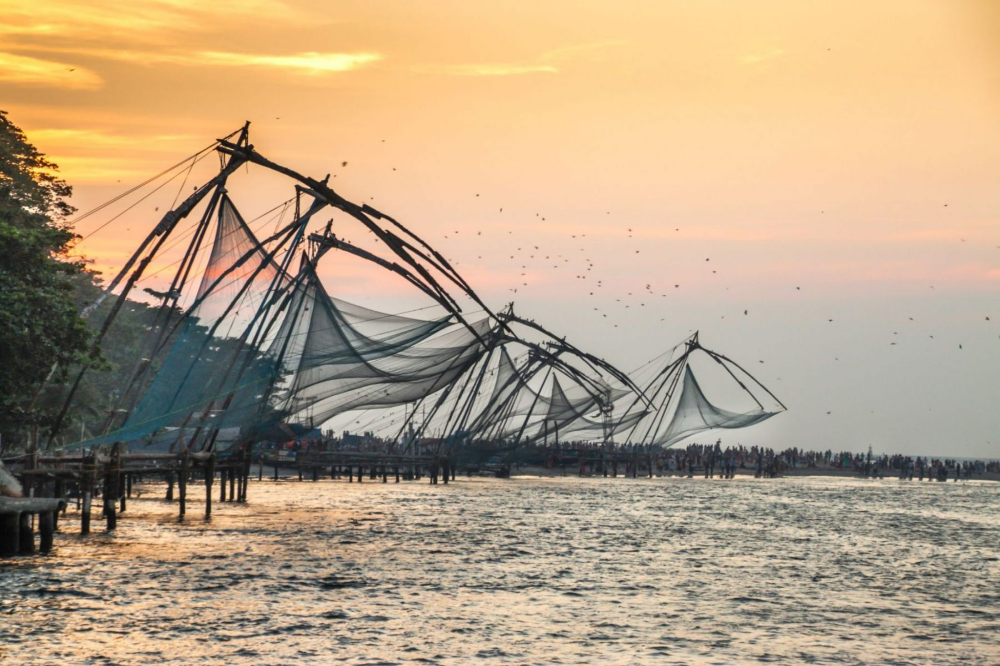
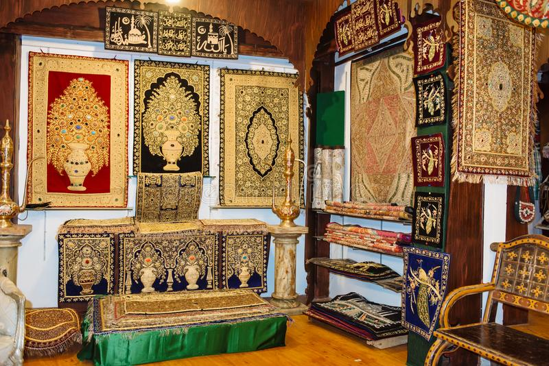
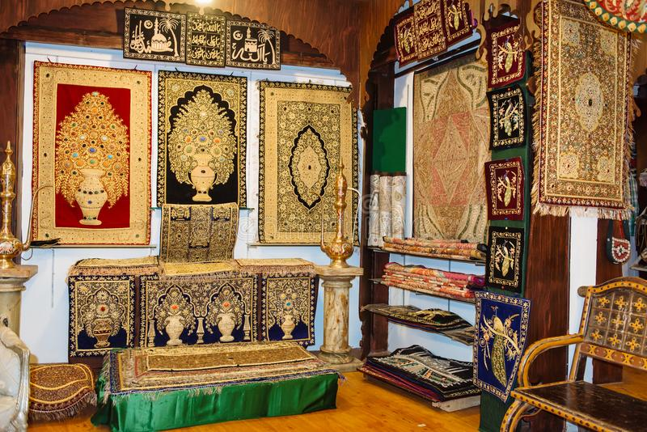

FORT KOCHI
Fort Kochi (View Video) is a cultural vessel shaped by many historical influences, the traces of which can still be found in its very streets. Portuguese, Dutch and British influences are evident in the Indo-European architecture of the buildings dotting this town. A prime example of this is Fort Immanuel, a Portuguese bastion built in 1503 to mark the strategic alliance between the Maharaja of Cochin and the Portuguese monarch. The Dutch cemetery near the beach was built in the Dutch style of architecture of those times. Consecrated in 1724, the cemetery carries the remains of hundreds of people of Dutch and British nationality. It is currently managed by the Church of South India (CSI)
 


 
